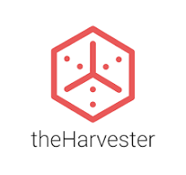
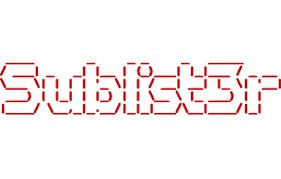

Discover and gather information about your target using these powerful reconnaissance tools. The first phase of ethical hacking involves collecting data to identify potential vulnerabilities.
Reconnaissance is the critical first step in penetration testing where you gather intelligence about your target. This phase helps identify potential attack vectors before any active scanning or exploitation.
Collects data without direct interaction (Google searches, WHOIS lookups, public social media).
Involves interacting with the target (port scanning, ping sweeps, DNS enumeration).

A powerful network scanning tool used for host discovery, port scanning, service detection, and vulnerability enumeration.
A full-featured web reconnaissance framework with a modular interface for collecting open-source intelligence (OSINT).
A powerful OSINT and link analysis platform that visually maps relationships between people, domains, IPs, emails, and social profiles.

A powerful OSINT tool for gathering emails, usernames, domains, and hostnames from public sources like Google, Bing, and LinkedIn.
A search engine for internet-connected devices. Used to find exposed services, IoT systems, vulnerable servers, and more.
A query tool that retrieves domain registration and ownership information, often used during reconnaissance to analyze targets.

A DNS enumeration tool that performs subdomain discovery, brute-forcing, and zone transfer checks to expose potential attack surfaces.
An automated OSINT tool that scans IPs, domains, emails, and usernames using 200+ sources to reveal vulnerabilities and digital footprints.
A metadata extraction and footprinting tool that analyzes public documents to discover hidden information like usernames, emails, software versions, and network paths.
A DNS reconnaissance tool used to locate non-contiguous IP blocks and discover hidden domains and subnets via brute-force and zone transfers.
Essential DNS interrogation tools for querying name servers, retrieving zone records, and performing advanced DNS lookups.

A fast subdomain enumeration tool that uses multiple public search engines and OSINT sources to discover subdomains of a target domain.
An advanced OSINT and attack surface mapping tool for discovering subdomains, DNS records, infrastructure, and external assets.
A command-line tool to search the Censys internet-wide scan database, uncovering exposed services, misconfigurations, and digital footprints.

A web scanner that identifies websites’ technologies, frameworks, server info, CMS, and plugins to reveal potential weaknesses.